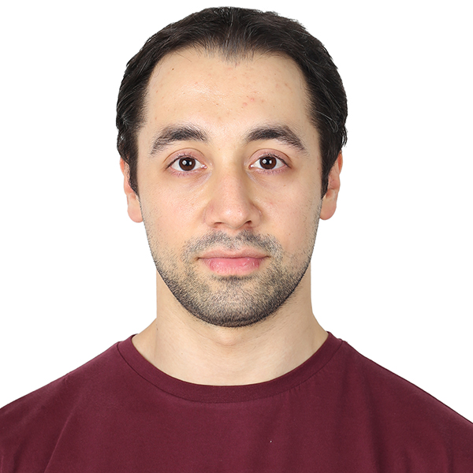

My Resume
Berke Ozturk

Work Experience
Atos
SAP Application Specialist
- Complete SAP PP, Customer service 2nd level support for Siemens Healthineers AG customer (TripleS project)
- SAP PP Customizing
- CR Implementation, collection of the business requirements, functional design creation, effort estimation, functional testing and change documents
maintenance in Solution Manager
- Customer specific reports and interfaces error resolution
SAP Solution Specialist
- Acquired training on SAP PP and QM modules, including theoretical and practical aspects
- Gained hands-on experience by actively participating in a live project, having valuable insights
- Conducted weekly presentations on SAP modules, concepts and practices
- Collaborated within a multicultural team of six members, enhancing cross-cultural communication and teamwork skills0
- Received weekly feedback from mentors to continuously improve and adapt in the role
Baykar Technology
Artificial Intelligence Software Intern
- Gained high level experience on OpenAI Gym reinforcement learning environments and create our own environment in PyGame
- Working on Q Learning and Deep Q Learning algorithms in PyGame environment
- Synthetic data in computer vision with Unity Perception, modeling the obtained data in Facebook-Detectron2
- Unit test framework research, features of frameworks and how they are integrated into the code
Istanbul Metropolitan Municipality
Software Developer Intern
- Ensuring the integration of the previously used workshop tracking application to the new stock tracking application by using C# and SQL programs
Skills
- SAP Production Planning | SAP Material Management | SAP SolMan | ABAP | SQL | Python | Numpy | Pandas | Scikit-learn | Microsoft Excel | Microsoft
Office | HTML
Education
Marmara University
Bachelor of Science
- Major in Mechatronics Engineering
- Final Cumulative GPA: 2,57/4,00
Contact Me
Others